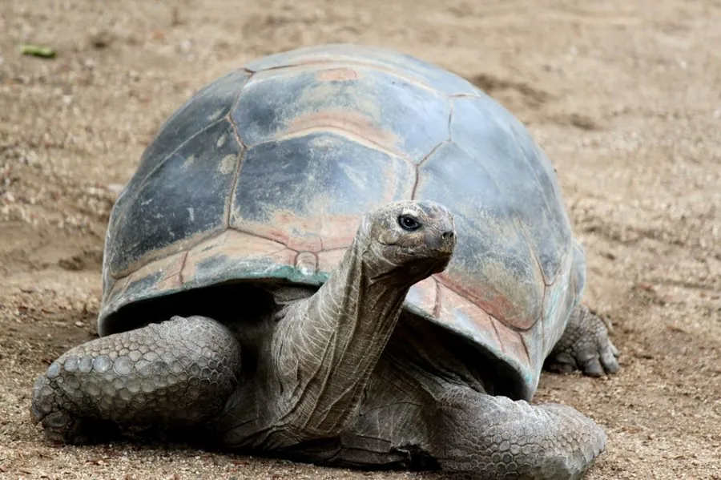

爬行动物 · 动物界
亚达伯拉象龟 Aldabrachelys gigantea

印度洋亚达伯拉环礁上的巨型陆龟，背甲可长逾一米、体重超过二百千克，寿命超过百年，是现存体型第二大的陆龟。
- 分类
- 门脊索动物门纲爬行纲目龟鳖目科陆龟科属亚达伯拉象龟属
- 栖息环境
- 珊瑚石灰岩岛屿上的灌丛、草地、红树林边缘与沙质滩地
- 地理分布
- 塞舌尔群岛的亚达伯拉环礁，另有一些重引入种群分布于印度洋岛屿
- 保护级别
- IUCN 易危（VU）；CITES 附录Ⅱ
物种志
亚达伯拉象龟是现存体型第二大的陆龟，背甲长可达 1.0–1.4 米，体重 150–250 千克，个别雄性更重；颈部极长，可向上伸起取食高处的枝叶。背甲高隆呈灰褐至深褐色，盾片粗糙，随年龄增长磨损变平；四肢粗壮如柱，覆以厚重鳞片。雄龟明显大于雌龟，尾较长。
它们仅分布于印度洋塞舌尔群岛的亚达伯拉环礁，栖息于珊瑚石灰岩岛屿上的灌丛、草地与红树林边缘。食性以草、树叶、果实为主，也吃腐肉与动物残骸，常成群聚集在有限的淡水坑边饮水。它们在旱季会啃食植被、踩踏地面，对岛屿生态系统影响巨大，被视为“生态系统工程师”。每年 2–5 月产卵，每窝 9–25 枚，孵化期长达 4–8 个月，幼龟成活率低。由于历史上被水手大量捕食，其种群一度锐减，现受严格保护，数量已回升至十万只左右。
形态与习性
- 背甲长约 1.0–1.4 m，体重 150–250 kg
- 食性草、树叶、果实，也食腐肉与动物残骸
- 繁殖2–5 月产卵，每窝 9–25 枚，孵化约 4–8 个月
- 寿命普遍超过 100 年，最长记录约 190 年
- 生态作用啃食与踩踏塑造植被结构，被称为生态系统工程师
- 种群现状亚达伯拉环礁野生个体约 10 万只，为现存最大种群
- 颈部颈极长，可向上伸起取食 1 m 高处的枝叶
趣味知识
- 亚达伯拉象龟能把脖子伸得很长，去够一米高处的树叶。
- 它踩出的“龟道”和啃食形成的开阔草地，改变了整个岛屿的植被。
- 历史上水手把象龟囤在船舱里当活罐头，导致多个岛屿种群灭绝。